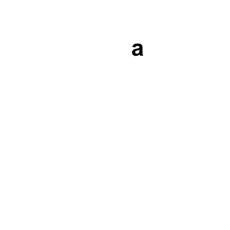
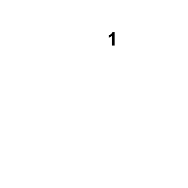
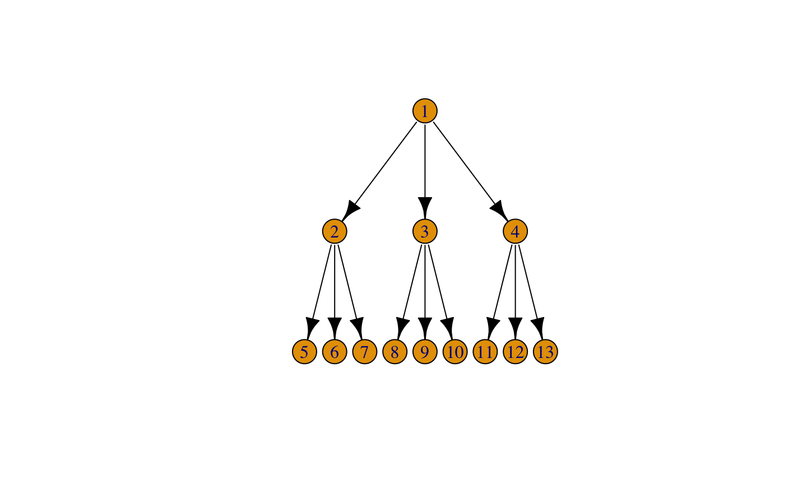
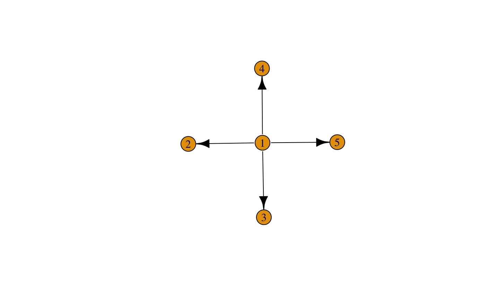
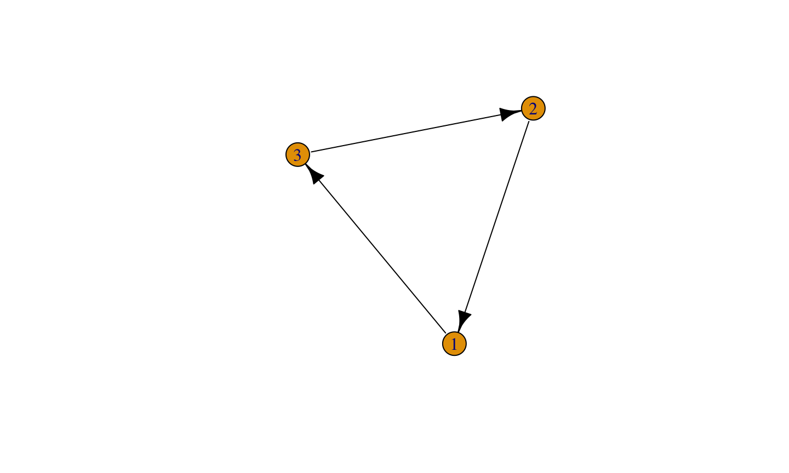
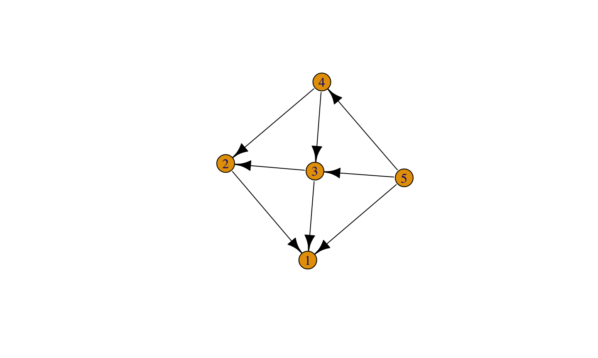
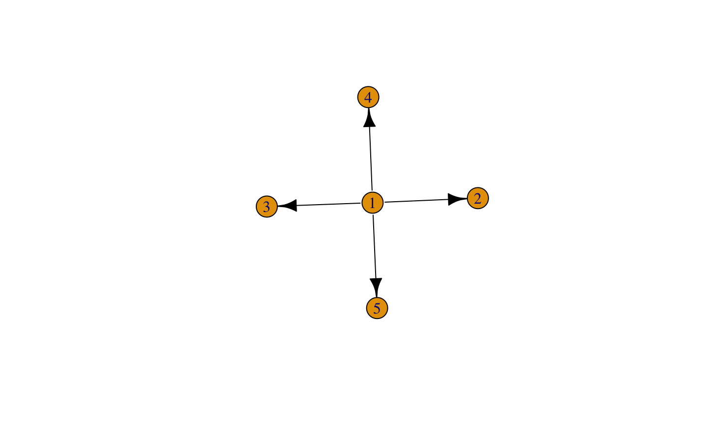

- 安裝R 與Rstudio
- Rstudio 功能簡介
- Expression、變數與字串
- 函數的使用
- 套件的使用
- R 語言的基礎物件與型態
- R 語言的錯誤處理與除錯
- 安裝R 語言翻轉教室
- R Basic 系列習題解說
2019/5/8
課程大綱
安裝R 與Rstudio
事前注意事項
- 檢查Windows使用者名稱是否包含中文
- 若包含中文，請參考：Windows中文使用者與Rstudio的環境變數調校
- 有問題可以：
- 請教助教
- 到聊天室貼圖發問
安裝 R
- 建議安裝 3.4.2 版本，可以從 MRAN Snapshot 上下載
- 依據作業系統做選擇:
- Windows –> base –> Download R 3.4.2 for Windows –> 打開下載後的檔案並安裝
- Mac OS X –> R-3.4.2.pkg –> 打開下載後的檔案並安裝
- [Linux] 請參考官方網站上不同distribution的安裝說明，
安裝Rstudio
- Google “Rstudio Download”
- 安裝社群版
- Windows 基於中文編碼問題的相容性，請務必安裝
Rstudio 功能簡介
界面介紹
程式碼編輯區(1)
- 主要撰寫程式碼的區域
- 具備多種功能協助我們使用程式碼
語法錯誤提示

自動完成與說明文件

對稱的括號提示

Console(2)

環境資訊(3)

檔案系統、說明文件與圖片(4)

檔案系統、說明文件與圖片(4)

檔案系統、說明文件與圖片(4)

Expression、變數與字串
學習目標
- 瞭解什麼是
expression(敘述)- 建立變數(assignment)
- 計算
- 呼叫函數
- 瞭解函數、參數
expression
- R 的程式是由一個又一個的expression所構成
- Console 會回應每一個「完整」的expression
- Console上的
>代表「R 正準備接受下一個expression」 - 輸入
Enter後，R會檢查expression有沒有結束- 結束的話，就會開始進行運算
- 沒結束的話，在下一行會出現
+提示使用者expression尚未結束
運算的expression

運算的expression

運算的expression
- 先乘除後加減，括號更優先
- Console上的
+代表「R 認為expression沒有結束」 - 完成expression後R 才會處理
ESC可以中斷expression
註解與expression
- 輸入到console的程式碼，都會被當成expression處理
#之後的程式碼不會被處理，稱為「註解」- ps. 投影片之後會用以下格式Demo程式碼的執行結果:
1 + 1
## [1] 2
#1 + 1
運算順序 與 子expression
- 在一個
expression中，可能包含多個子expression - R 會依照順序做運算，並且把子
expression的運算結果與子expression本身做替換
((( 1 + 1 ) + 1) + 1) ((2 + 1) + 1) (3 + 1) 4
範例：請問以下的expression會用怎樣的順序做運算？
:、*、^與%%都是運算子- 可不可以與R互動找到答案？
??operator
- 其他網路上的資源
3 ^ 2 * 2 + 10 %% 3
變數
- 變數的概念很接近數學的「未知數」
- 可透過
=或<-來建立變數
- 可透過
變數的名稱 = expression- 範例：
y <- x + 1
x代入 1 則y為 2x代入 2 則y為 3
變數與計算
x <- 1 ### y <- x + 1 y <- 1 + 1 y <- 2
變數與計算
x <- 10 (1 + 2 * x) (1 + 2 * 10)
變數名稱的規範
A syntactic name is a string the parser interprets as this type of expression. It consists of letters, numbers, and the dot and (for versions of R at least 1.9.0) underscore characters, and starts with either a letter or a dot not followed by a number. Reserved words are not syntactic names.
- 不用記，問R就好
變數名稱的規範
x <- 1 .x <- 1 _x <- 1 x_1 <- 1 . <- 1 .1 <- 1 中文 <- 1
字串
- 前後利用
"或'所夾住的文字，在程式碼中會視為字串(character) - 文字的意義就是「文字」，不做運算
1 + 1
## [1] 2
"1 + 1"
## [1] "1 + 1"
"1" + '1' # 文字不可相加
## Error in "1" + "1": 二元運算子中有非數值引數
變數 vs 字串
a <- 1 plot.new() title(main = "a")

plot.new() title(main = a) # 變數會有「代換」的動作

函數
plot.new() title(main = "a")
plot.new、title等是R的函數- 變數代表「值」
- 函數代表「動作」
- 我們可以把連續的動作取名字，當成函數
- 例：
plot.new代表建立一個空白的圖、title代表建立標題
- 使用變數：
變數的名字 - 呼叫函數：
函數的名字(...)
寫R 會運用大量的函數
- Wiki: Mandelbrot set 請同學分辨以下的expressions中的名字，哪些是變數哪些是函數？
install.packages("caTools") # install external package
library(caTools) # external package providing write.gif function
jet.colors <- colorRampPalette(c("red", "blue", "#007FFF", "cyan", "#7FFF7F",
"yellow", "#FF7F00", "red", "#7F0000"))
dx <- 1500 # define width
dy <- 1400 # define height
C <- complex(real = rep(seq(-2.2, 1.0, length.out = dx), each = dy),
imag = rep(seq(-1.2, 1.2, length.out = dy), dx))
C <- matrix(C, dy, dx) # reshape as square matrix of complex numbers
Z <- 0 # initialize Z to zero
X <- array(0, c(dy, dx, 20)) # initialize output 3D array
for (k in 1:20) { # loop with 20 iterations
Z <- Z^2 + C # the central difference equation
X[, , k] <- exp(-abs(Z)) # capture results
}
write.gif(X, "Mandelbrot.gif", col = jet.colors, delay = 100)
函數的名稱與參數
install.packages("caTools") # install external package
install.packages是函數的名字，告訴R要做什麼動作"caTools"是install.packages的參數，告訴R 動作的細節
呼叫函數
- 呼叫函數是一種
expression - 參數可以是任何的
expression
C <- complex(real = rep(seq(-2.2, 1.0, length.out = dx), each = dy),
imag = rep(seq(-1.2, 1.2, length.out = dy), dx))
- 使用
complex的函數時，指定了名稱為real與imag的兩個參數real的參數的值是rep(seq(-2.2, 1.0, length.out = dx), each = dy)這個expressionrep與seq也都是函數- 這個
expression中有三層的函數呼叫（巢狀函數）
- 參數
real的值中的seq函數的前兩個參數-2.2與1.0沒有名字，第三個參數的名字是length.out
函數的定義
?seq
Usage章節說明函數的定義
函數的定義
## Default S3 method:
seq(from = 1, to = 1, by = ((to - from)/(length.out - 1)),
length.out = NULL, along.with = NULL, ...)
- 用兩種方式表示參數：
參數的名字或參數的名字 = 預設值 - 用逗號分隔不同的參數
...是不定參數，表示函數接受額外的參數（註：除了列出的名字以外的參數）
不定參數
沒有不定參數的函數，不能接受額外的參數
plot.new()

plot.new(main = "a") # Error
## Error in plot.new(main = "a"): unused argument (main = "a")
有不定參數的函數，接受額外的參數
seq()
## [1] 1
seq(lalalalove = 1) # No error
## Warning: In seq.default(lalalalove = 1) : ## extra argument 'lalalalove' will be disregarded
## [1] 1
呼叫函數時，參數的比對
- 有名字的參數優先比對相同名字的參數
- 沒有名字的參數則依照順序比對剩下的參數
seq(-2.2, 1.0, length.out = dx)dx是length.out參數的值-2.2是from的值1.0是to的值
- 沒比對到的參數，會使用預設值（如果有的話），否則會出現錯誤
mean()
## Error in mean.default(): 缺少引數 "x"，也沒有預設值
進入函數
debug(seq) seq(-2.2, 1.0, length.out = dx)
- 可以探索R實際上丟給函數的參數
呼叫函數的順序
dx <- 1500 # define width
dy <- 1400 # define height
C <- complex(real = rep(seq(-2.2, 1.0, length.out = dx), each = dy),
imag = rep(seq(-1.2, 1.2, length.out = dy), dx))
- 在建立
C之前，R 會先計算seq函數的結果，然後計算rep函數的結果，最後才計算complex函數的結果 - 同學可以反白部份的
expression進行檢查
套件的使用
套件的目的
- 擴充R的功能
- 處理網頁的套件:
XML、xml2、jsonlite - 爬網站的套件:
httr - 跑進階分析(某篇paper的演算法)的套件:
supc
- 處理網頁的套件:
- 整理函數
- 整理資料:
dplyr - 繪圖:
ggplot2
- 整理資料:
- 提供資料
- 棒球資料:
Lahman
- 棒球資料:
- 將程式碼轉移到其他人的電腦上運作
安裝套件的install.packages函數
?install.packages
- 重要的參數：
pkgs，代表要安裝的套件的名稱pkgs的參數要不要加上字串
載入套件的library函數
- 只能載入已經安裝的套件
- 載入後才能直接使用套件的函數
write.gif是caTools的函數- 沒載入的話，要使用
caTools::write.gif來使用（套件名稱::函數名稱）
library(caTools)
- 例外:
library的參數不需要加上引號
探索R 的世界
探索套件 –> 探索函數
重現範例 –> 修改範例
- 先看套件的說明文件
- 套件本身的
DESCRIPTION vignettes
- 套件本身的
- 尋找有價值的範例並重現之
- 修改範例的時候，才需要看函數的定義與參數的用法
範例：學習 Mandelbrot set
install.packages("caTools") # install external package
library(caTools) # external package providing write.gif function
jet.colors <- colorRampPalette(c("red", "blue", "#007FFF", "cyan", "#7FFF7F",
"yellow", "#FF7F00", "red", "#7F0000"))
dx <- 1500 # define width
dy <- 1400 # define height
C <- complex(real = rep(seq(-2.2, 1.0, length.out = dx), each = dy),
imag = rep(seq(-1.2, 1.2, length.out = dy), dx))
C <- matrix(C, dy, dx) # reshape as square matrix of complex numbers
Z <- 0 # initialize Z to zero
X <- array(0, c(dy, dx, 20)) # initialize output 3D array
for (k in 1:20) { # loop with 20 iterations
Z <- Z^2 + C # the central difference equation
X[, , k] <- exp(-abs(Z)) # capture results
}
write.gif(X, "Mandelbrot.gif", col = jet.colors, delay = 100)
如何探索套件
- CRAN Task View
- 增廣見聞
- 交流、問老師
R 語言的基礎物件與型態
R 物件
- 所有的東西都是一種「R 物件」
- 資料
- 函數
- 環境
- 外部指標
向量
- 複雜的R 物件們都是由基礎的R 物件所組合的。
- 所有的R 「資料」物件（以下簡稱R物件）都是「向量」
x <- 1:3 # x 是一個R物件，是一個向量（不只一個值） x[1] # 第一個值
## [1] 1
x[2] # 第二個值
## [1] 2
length(x) # 長度
## [1] 3
型態
- R 的向量有以下若干種型態：
logical裝布林(TRUE/FALSE)的向量integer裝整數(4 bytes)的向量numeric裝浮點數(8 bytes)的向量character裝字串(C-style)的向量list裝R物件的向量
class可以查詢物件的型態、str可以查詢物件的結構
範例
g <- lm(dist ~ speed, cars) str(g)
## List of 12 ## $ coefficients : Named num [1:2] -17.58 3.93 ## ..- attr(*, "names")= chr [1:2] "(Intercept)" "speed" ## $ residuals : Named num [1:50] 3.85 11.85 -5.95 12.05 2.12 ... ## ..- attr(*, "names")= chr [1:50] "1" "2" "3" "4" ... ## $ effects : Named num [1:50] -303.914 145.552 -8.115 9.885 0.194 ... ## ..- attr(*, "names")= chr [1:50] "(Intercept)" "speed" "" "" ... ## $ rank : int 2 ## $ fitted.values: Named num [1:50] -1.85 -1.85 9.95 9.95 13.88 ... ## ..- attr(*, "names")= chr [1:50] "1" "2" "3" "4" ... ## $ assign : int [1:2] 0 1 ## $ qr :List of 5 ## ..$ qr : num [1:50, 1:2] -7.071 0.141 0.141 0.141 0.141 ... ## .. ..- attr(*, "dimnames")=List of 2 ## .. .. ..$ : chr [1:50] "1" "2" "3" "4" ... ## .. .. ..$ : chr [1:2] "(Intercept)" "speed" ## .. ..- attr(*, "assign")= int [1:2] 0 1 ## ..$ qraux: num [1:2] 1.14 1.27 ## ..$ pivot: int [1:2] 1 2 ## ..$ tol : num 1e-07 ## ..$ rank : int 2 ## ..- attr(*, "class")= chr "qr" ## $ df.residual : int 48 ## $ xlevels : Named list() ## $ call : language lm(formula = dist ~ speed, data = cars) ## $ terms :Classes 'terms', 'formula' language dist ~ speed ## .. ..- attr(*, "variables")= language list(dist, speed) ## .. ..- attr(*, "factors")= int [1:2, 1] 0 1 ## .. .. ..- attr(*, "dimnames")=List of 2 ## .. .. .. ..$ : chr [1:2] "dist" "speed" ## .. .. .. ..$ : chr "speed" ## .. ..- attr(*, "term.labels")= chr "speed" ## .. ..- attr(*, "order")= int 1 ## .. ..- attr(*, "intercept")= int 1 ## .. ..- attr(*, "response")= int 1 ## .. ..- attr(*, ".Environment")=<environment: R_GlobalEnv> ## .. ..- attr(*, "predvars")= language list(dist, speed) ## .. ..- attr(*, "dataClasses")= Named chr [1:2] "numeric" "numeric" ## .. .. ..- attr(*, "names")= chr [1:2] "dist" "speed" ## $ model :'data.frame': 50 obs. of 2 variables: ## ..$ dist : num [1:50] 2 10 4 22 16 10 18 26 34 17 ... ## ..$ speed: num [1:50] 4 4 7 7 8 9 10 10 10 11 ... ## ..- attr(*, "terms")=Classes 'terms', 'formula' language dist ~ speed ## .. .. ..- attr(*, "variables")= language list(dist, speed) ## .. .. ..- attr(*, "factors")= int [1:2, 1] 0 1 ## .. .. .. ..- attr(*, "dimnames")=List of 2 ## .. .. .. .. ..$ : chr [1:2] "dist" "speed" ## .. .. .. .. ..$ : chr "speed" ## .. .. ..- attr(*, "term.labels")= chr "speed" ## .. .. ..- attr(*, "order")= int 1 ## .. .. ..- attr(*, "intercept")= int 1 ## .. .. ..- attr(*, "response")= int 1 ## .. .. ..- attr(*, ".Environment")=<environment: R_GlobalEnv> ## .. .. ..- attr(*, "predvars")= language list(dist, speed) ## .. .. ..- attr(*, "dataClasses")= Named chr [1:2] "numeric" "numeric" ## .. .. .. ..- attr(*, "names")= chr [1:2] "dist" "speed" ## - attr(*, "class")= chr "lm"
向量化的運算
- R 內建迴圈
x <- 1:3 # `:` 可以快速產生序列，`1:3` 代表從1至3間隔為1的數列 y <- 2:4 x + y
## [1] 3 5 7
範例：如何快速判斷p是不是質數
p <- 257 . <- 2:(p-1) # 2 和 p-1之間的所有整數 # 檢查他們是不是p的因數（餘數為0） . <- p %% . # 計算餘數 . <- . == 0 # 拿餘數與0比較 any(.) # 有沒有任何的因數，有因數的話p就不是值數
## [1] FALSE
# which(.) # 看看那一個是因數
向量化的對齊
x <- 1:3 y <- 1:6 x + y # R會重複比較短的向量，補到一樣長之後再做運算
## [1] 2 4 6 5 7 9
[的操作
[可以從向量中讀出特定的資料[是一種特別的函數- 第一個參數在
[的左邊 - 其他參數在
[與]之間 - 參數有不同的型態，會有不同的效果
[可以與<-或=搭配，修改向量的值
- 第一個參數在
[ + 數值向量
x[1]會從x中取出第一個位置的元素
x <- 1:3 x[1]
## [1] 1
x[1:2]
## [1] 1 2
x[-2]
## [1] 1 3
[ + 布林向量
x[c(T, F, T)]會取出對應位置為T的位置的元素- 常見於條件篩選
set.seed(1) x <- rnorm(10) # 10000個標準常態分佈的隨機亂數 x[x > 1] # 超過1的元素
## [1] 1.595281
x[x > -1 & x < 1] # 1 與 -1 之間的元素
## [1] -0.6264538 0.1836433 -0.8356286 0.3295078 -0.8204684 0.4874291 ## [7] 0.7383247 0.5757814 -0.3053884
y <- rnorm(10) x[y > 1] # 那些y超過1的對應位置的x
## [1] -0.6264538 0.3295078
[ + 字串向量
x <- 1:26 names(x) <- letters x["n"]
## n ## 14
x[c("n", "w", "w", "a")]
## n w w a ## 14 23 23 1
關於[
x[...]一定與x會是相同的型態[的效果與x的型態無關，與[]之間的物件的型態有關
安裝R 語言翻轉教室
一行指令安裝做作業的系統
source("http://homepage.ntu.edu.tw/~wush978/R/init-swirl.R")
- DataScienceAndR中有許多的單元，是我們的作業主要來源
- 上課沒教到的部份（細節），同學要在作業中學習
- 還會需要額外的指令安裝其他題目
- 疑難排解： https://gitter.im/wush978/DataScienceAndR
這周請同學完成：
- 00-Hello-DataScienceAndR
- 01-RBasic-01-Introduction
- 01-RBasic-02-Data-Structure-Vectors
- 01-RBasic-03-Data-Structure-Object
- 01-RBasic-04-Factors
list
- R 物件的向量
- element 可以是各種向量、函數、環境…
- 需要使用
[[或$才能接觸到裝載的向量
g <- lm(dist ~ speed, cars) g[[1]]
## (Intercept) speed ## -17.579095 3.932409
g$coefficients
## (Intercept) speed ## -17.579095 3.932409
學習如何從console的輸出充判斷一般的向量與list
g[1]
## $coefficients ## (Intercept) speed ## -17.579095 3.932409
list(g[[1]])
## [[1]] ## (Intercept) speed ## -17.579095 3.932409
g[[1]]
## (Intercept) speed ## -17.579095 3.932409
屬性
- R 物件的屬性是一個「有名字的
list」
. <- g[[1]] attributes(.)
## $names ## [1] "(Intercept)" "speed"
str(.)
## Named num [1:2] -17.58 3.93 ## - attr(*, "names")= chr [1:2] "(Intercept)" "speed"
利用str了解R 物件的結構
str(g[1])
## List of 1 ## $ coefficients: Named num [1:2] -17.58 3.93 ## ..- attr(*, "names")= chr [1:2] "(Intercept)" "speed"
list 與樹狀結構
樹狀結構
- 除了root，每個node都有一個唯一的parent node
parent ---> children
- root的parent是空

list 與樹狀結構
- 這是不是樹狀結構?

list 與樹狀結構
- 這是不是樹狀結構?

list 與樹狀結構
- 這是不是樹狀結構?

list 與樹狀結構
list可以視為建立一個R物件之間的樹狀結構
list(2, 3, 4, 5)
 ## list 與樹狀結構
x <- list("2" = list(5, 6, 7), "3" = list(8, 9, 10), "4" = list(11, 12, 13))

樹狀結構常見於半結構化的資料
- XML
- JSON
原因
- 透過樹狀結構，可以讓資料之間的關係結構化，讓電腦處理
{
"name" : "Peter",
"age" : 35
"children" : [{"name" : "George", "age" : 5}, {"name" : "Mary", "age" : 3}]
}
[ 與 [[
[: 停留在parent，但是挑選children[[: 往children走
x[1]
## $`2` ## $`2`[[1]] ## [1] 5 ## ## $`2`[[2]] ## [1] 6 ## ## $`2`[[3]] ## [1] 7

[ 與 [[
[: 停留在parent，但是挑選children[[: 往children走
x[[1]] # x$`2`
## [[1]] ## [1] 5 ## ## [[2]] ## [1] 6 ## ## [[3]] ## [1] 7

Factor 利用屬性實作的物件
- 常用於取代字串
character型態 - 產生
data.frame時（R 常用的，處理結構化資料的物件）會自動轉換字串為factor型態
x <- iris$Species # 內建的結構化資料集 str(x)
## Factor w/ 3 levels "setosa","versicolor",..: 1 1 1 1 1 1 1 1 1 1 ...
attributes(x)
## $levels ## [1] "setosa" "versicolor" "virginica" ## ## $class ## [1] "factor"
Factor
attributes(x) <- NULL str(x)
## int [1:150] 1 1 1 1 1 1 1 1 1 1 ...
R 語言的錯誤處理與除錯
R 語言的錯誤處理
- Error 機制會中斷所有處理程序，除非被處理
f <- function() {
print(1) # 正常執行
stop("test error") # `stop` 拋出 condition 物件，中斷`f`的運作
print(2) # `f`被中斷了，不會被執行
}
f()
## [1] 1
## Error in f(): test error
R 語言的錯誤處理： try
g <- function() {
f()
print(3) # 不會被執行
}
g()
## [1] 1
## Error in f(): test error
g <- function() {
try(f(), silent = TRUE) # 處理錯誤後，會繼續執行`g`
print(3) #
}
g()
## [1] 1 ## [1] 3
R 語言的錯誤處理： try
try在錯誤發生時，會傳回一個型態為try-error的物件，讓使用者判斷有無發生錯誤
r <- try(f(), silent = TRUE)
## [1] 1
class(r) # 可以藉此判斷錯誤有沒有發生
## [1] "try-error"
conditionMessage(attr(r, "condition")) # 可以取得呼叫`stop`時傳入的字串
## [1] "test error"
r <- try({}, silent = TRUE)
class(r) # 不再是`try-error`
## [1] "NULL"
R 語言的錯誤處理： tryCatch
- 類似現代語言的
try-catch-finally的錯誤處理機制。
tryCatch({
# 進入 try-catch block 的程式碼
f()
}, error = function(e) {
# `e`就是捕捉到的錯誤（condition 物件）
print(conditionMessage(e)) # 印出錯誤訊息
}, finally = {
# 無論有沒有錯誤都一定會執行的程式碼
})
## [1] 1 ## [1] "test error"
巢狀函數的除錯
- 初學者不要使用巢狀函數
C <- complex(real = rep(seq(-2.2, 1.0, length.out = dx), each = dy),
imag = rep(seq(-1.2, 1.2, length.out = dy), dx))
- 請問，
each = dy是哪個函數的參數？（不明顯，容易誤判）
巢狀函數的除錯
- 遇到錯誤時，把巢狀函數用變數展開
- 找錯誤的重點在縮小錯誤可能發生的範圍
. <- seq(-2.2, 1.0, length.out = dx) .real <- rep(., each = dy) . <- seq(-1.2, 1.2, length.out = dy) .imag <- rep(., dx) C <- complex(real = .real, imag = .imag)
- 透過一行一行的執行，快速掌握是那一個函數的運作出錯
- 參數的誤值會很明顯
除錯器
browser()，產生中斷點debug(f)，在f函數的開頭插入中斷點。可透過undebug移除一開始的中斷點f可以是內建，或是套件提供的函數
trace可以暫時編輯一個函數的程式碼。（搭配browser使用），請看現場demo
除錯器
f <- function(a, ...) {
browser()
}
f(1, b = 2, 3)
安裝R 語言翻轉教室
R 語言翻轉教室
- 我用swirl（也變成共同作者了）寫出來的「在R學R」的「學習環境」
- 為什麼要「在R學R」?
- 協助我掌握同學們的進度
安裝R 語言翻轉教室
- 懶人包：執行
source("https://wush978.github.io/R/init-swirl.R") - 逐步執行的截圖，請參閱官方網站的安裝區
R Basic 系列習題解說
大魔王
- 每個課程的最後，都會有一個難度較高的關卡
- 課程筆記有每一個問題的問答，與大魔王的參考解答
- 忘記的同學可以利用這個區域做複習